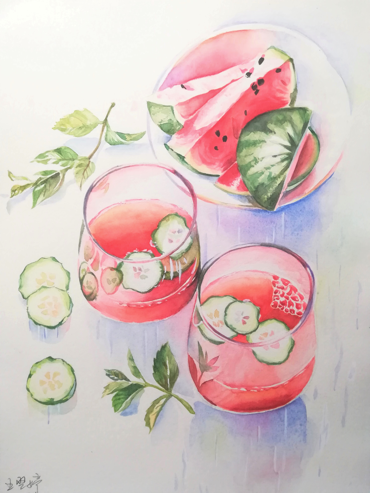
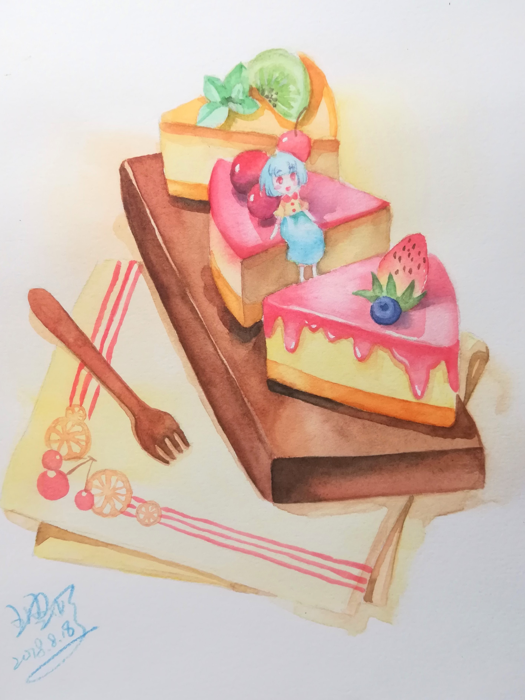
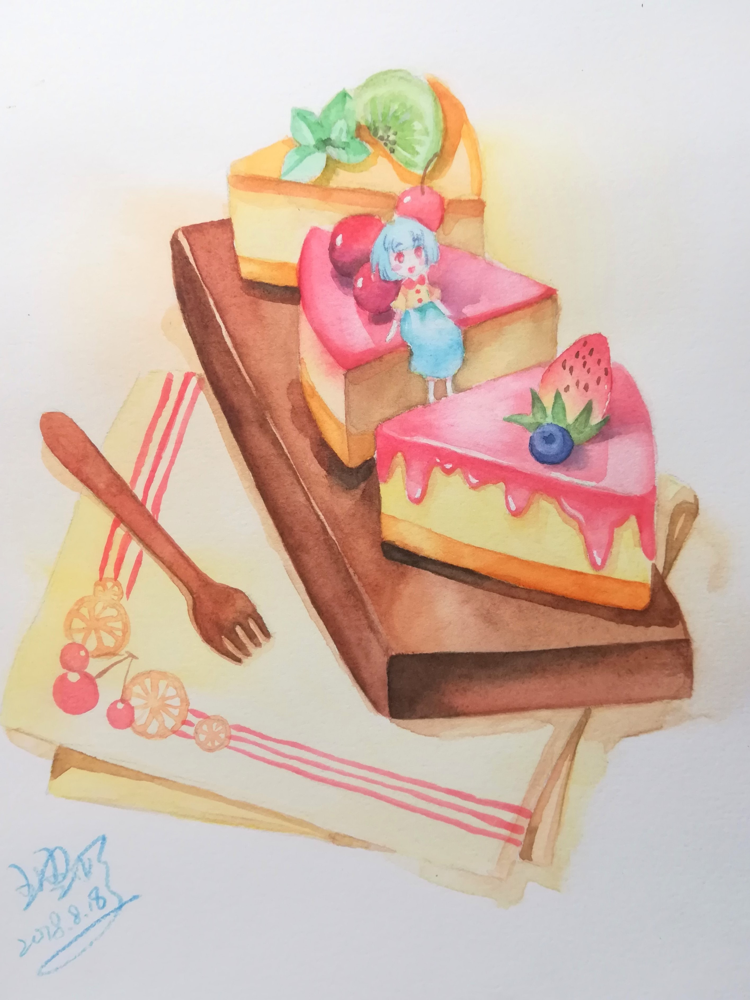

·PAINTING
I have been loving painting and drawing since very young. As growing up, I started to use professional painting tools, which gave me a sense of satisfaction.
Basically, I prefer watercolor(水彩)and acrylic(丙烯). The former has the quality of translucence. The more water you add to the pigment, the lighter color it will be. However, the acrylic is much thicker. I just have a favor of the two texture.
The things that I like to paint best are characters and snacks.



❤❤❤
·PHOTOGRAPHING
I took many photos of the sky and clouds, most at dusk and from my windowsill, in my spare time. I love to shot whatever I think is beautiful or harmony.
Meanwhile, I also joined in the shcool photographing association and recorded many school activitied.
❤❤❤
·TV SERIES
Like my mum, I tend to watch lots of TV series and I have a various appitite. Generally, Japanese and British ones are my favourite.
I have just finished GOOD OMENS(click to learn more), a british TV series about the angle and evil. It is so awesome that I highly recommended it to you.
❤❤❤
Click the purple button to go back.